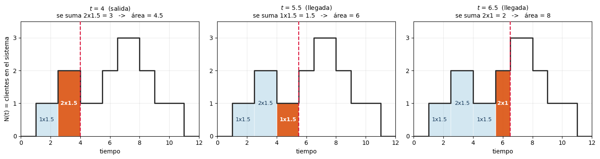
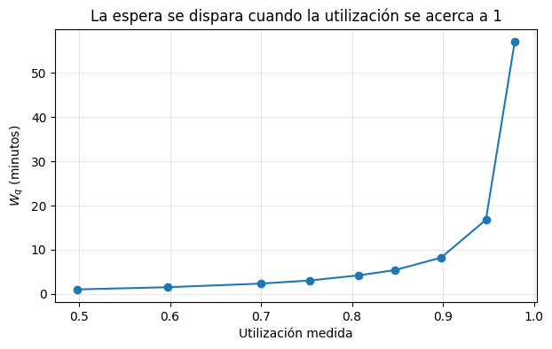
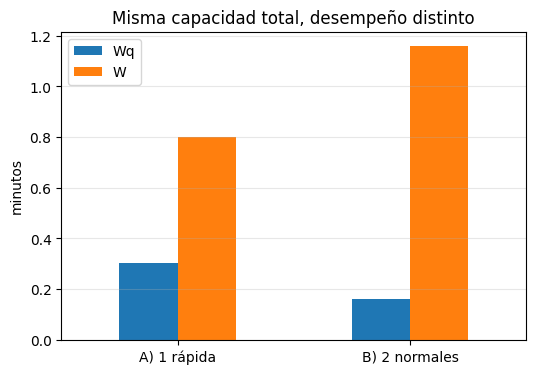

Complementaria Semana 5: Medir y comparar sistemas de colas con SimPy#
La semana pasada aprendiste a construir un sistema de colas en SimPy: el entorno, los procesos, env.timeout para el paso del tiempo y Resource para el servidor con su cola FIFO. Con eso ya viste la cola formarse y vaciarse en la traza.
Hoy le agregamos lo que falta: medirla.
Objetivos#
Instrumentar un modelo de SimPy para estimar \(W_q\), \(W\), \(L_q\), \(L\) y la utilización.
Entender por qué una sola corrida no es un resultado, y usar réplicas.
Verificar que el modelo esté bien instrumentado con la Ley de Little.
Estudiar qué le pasa a la congestión cuando la utilización se acerca a 1.
Comparar dos sistemas con la misma capacidad y decidir cuál conviene.
Todo lo de hoy sale de los datos que produce la simulación. Las fórmulas cerradas para estos sistemas llegan más adelante en la magistral; cuando las tengas, vas a poder contrastarlas con lo que hoy vas a medir.
0. Preparación#
SimPy ya lo instalaste la semana pasada en tu ambiente virtual. Si cambiaste de ambiente, descomenta la primera línea.
# %pip install simpy
import simpy
import numpy as np
import statistics
import math
import pandas as pd
import matplotlib.pyplot as plt
1. Del modelo a la medición#
Este es el modelo de la semana pasada. Un cliente llega, pide el servidor, espera si está ocupado, se atiende y se va:
def cliente(env, servidores):
with servidores.request() as turno:
yield turno
yield env.timeout(rng.exponential(1 / mu))
El problema es que este código no deja rastro. Cuando la simulación termina no sabemos cuánto esperó nadie. Necesitamos un monitor: una estructura donde ir anotando lo que pasa.
Dos formas distintas de promediar#
Aquí hay una sutileza que vale la pena tener clara, porque es la fuente de errores más común al instrumentar una simulación:
Métrica |
Se promedia sobre… |
Cómo se mide |
|---|---|---|
\(W_q\), \(W\) |
los clientes |
se guarda un número por cliente y al final se promedia la lista |
\(L_q\), \(L\), utilización |
el tiempo |
hay que acumular el área bajo la curva de cuántos clientes hay, y dividir por el horizonte |
\(L\) no es “el promedio de una lista de números de clientes”. Es
n_actual × (tiempo transcurrido) cada vez que el número cambia.
Esa es la única parte del código de hoy que es realmente nueva:
def actualizar_areas(env):
dt = env.now - m["t_ult"] # tiempo transcurrido desde el último cambio
m["area_L"] += m["n_sist"] * dt # rectángulo bajo N(t)
m["area_Lq"] += m["n_cola"] * dt
m["t_ult"] = env.now
Se llama antes de modificar los contadores, para que el tiempo que acaba de pasar se le acredite al número viejo de clientes.
Veámoslo con un dibujo#
Antes de programarlo, veamos exactamente qué rectángulos se están sumando. Tomemos una historia pequeña e inventada de un sistema donde entran y salen clientes:
\(t\) |
evento |
\(N(t)\) queda en |
|---|---|---|
1.0 |
llegada |
1 |
2.5 |
llegada |
2 |
4.0 |
salida |
1 |
5.5 |
llegada |
2 |
6.5 |
llegada |
3 |
8.0 |
salida |
2 |
9.0 |
salida |
1 |
11.0 |
salida |
0 |
\(N(t)\) es una escalera: se mantiene plana entre eventos y salta solo cuando alguien entra o sale. Por eso el área bajo la curva no necesita integrales, ya que es una suma de rectángulos, y cada rectángulo tiene altura “cuántos había” y base “cuánto duró”.
Los tres paneles siguientes muestran tres llamados consecutivos a actualizar_areas. En cada uno, el rectángulo naranja es el único que se agrega en esa llamada; los azules ya estaban acumulados. La línea roja punteada es env.now.
# Historia de ejemplo (inventada, para ver el mecanismo)
tiempos = [0.0, 1.0, 2.5, 4.0, 5.5, 6.5, 8.0, 9.0, 11.0, 12.0]
niveles = [0, 1, 2, 1, 2, 3, 2, 1, 0]
tipo = ["", "llegada", "llegada", "salida", "llegada", "llegada", "salida", "salida", "salida"]
T_demo = 12.0
def panel(ax, k, primero=False):
# Dibuja el estado de la acumulación justo después del k-ésimo evento
ax.step(tiempos, niveles + [niveles[-1]], where="post", linewidth=2, color="#2b2b2b", zorder=3)
area = 0.0
for j in range(k):
t0, t1, n0 = tiempos[j], tiempos[j+1], niveles[j]
area += n0 * (t1 - t0) # <- esto es lo que hace actualizar_areas
if n0 > 0:
nuevo = (j == k - 1) # el rectángulo que se acaba de sumar
ax.add_patch(plt.Rectangle(
(t0, 0), t1 - t0, n0,
facecolor="#d94801" if nuevo else "#9ecae1",
alpha=0.85 if nuevo else 0.45, edgecolor="white", zorder=2))
ax.text((t0 + t1)/2, n0/2, f"{n0}x{t1-t0:g}", ha="center", va="center",
fontsize=9, color="white" if nuevo else "#123456",
fontweight="bold" if nuevo else "normal", zorder=4)
ax.axvline(tiempos[k], color="crimson", linestyle="--", linewidth=1.6, zorder=5)
j = k - 1
ax.set_title(f"$t$ = {tiempos[k]:g} ({tipo[k]})\n"
f"se suma {niveles[j]}x{tiempos[k]-tiempos[j]:g} = {niveles[j]*(tiempos[k]-tiempos[j]):g}"
f" -> área = {area:g}", fontsize=10)
ax.set_xlim(0, T_demo); ax.set_ylim(0, 3.5)
ax.set_xlabel("tiempo"); ax.set_yticks([0, 1, 2, 3]); ax.grid(alpha=0.25, zorder=0)
if primero:
ax.set_ylabel("N(t) = clientes en el sistema")
fig, axes = plt.subplots(1, 3, figsize=(14, 3.8))
for i, (ax, k) in enumerate(zip(axes, [3, 4, 5])):
panel(ax, k, primero=(i == 0))
plt.tight_layout()
plt.show()
# El área completa sobre todo el horizonte
area_total = sum(niveles[j]*(tiempos[j+1] - tiempos[j]) for j in range(len(niveles)))
print(f"Área total bajo N(t) : {area_total:g}")
print(f"Horizonte T : {T_demo:g}")
print(f"L = área / T : {area_total/T_demo:.4f} clientes en promedio")

Área total bajo N(t) : 16.5
Horizonte T : 12
L = área / T : 1.3750 clientes en promedio
Fíjate en lo que acaba de pasar en el panel del medio: entre \(t=4\) y \(t=5.5\) había un solo cliente, así que el rectángulo que se suma es \(1 \times 1.5\). Si hubiéramos actualizado el contador antes de cerrar el rectángulo, ese tramo se habría contado como si hubiera habido 2 clientes. Ese es exactamente el error que evita llamar actualizar_areas primero.
Y fíjate en el resultado final: \(L = 16.5/12 = 1.375\) clientes en promedio. Ese número no es el promedio de la lista [1, 2, 1, 2, 3, 2, 1, 0] (que daría 1.5). Son cosas distintas porque los tramos duran distinto: el tramo con 3 clientes dura 1.5 minutos y el tramo con 1 cliente al final dura 2. Promediar la lista le daría el mismo peso a los dos, y eso está mal.
Si alguna vez calculas \(L\) como
statistics.mean(...)de una lista de conteos, estás promediando sobre eventos en lugar de sobre el tiempo. Es el error más común al instrumentar una simulación.
Ahora sí, el código#
def simular_mms(lam, mu, s, T, semilla=0):
# Simula una cola M/M/s y devuelve las métricas de desempeño.
# lam: tasa de llegadas mu: tasa de servicio por servidor
# s: número de servidores T: horizonte de simulación
rng = np.random.default_rng(semilla)
m = {
"salidas": 0,
"Wq": [], "W": [], # se promedian sobre CLIENTES
"area_L": 0.0, "area_Lq": 0.0, # se promedian sobre el TIEMPO
"n_sist": 0, "n_cola": 0, # contadores instantáneos
"t_ult": 0.0, # instante del último cambio
}
def actualizar_areas(env):
dt = env.now - m["t_ult"]
m["area_L"] += m["n_sist"] * dt
m["area_Lq"] += m["n_cola"] * dt
m["t_ult"] = env.now
def cliente(env, servidores):
t_llegada = env.now
actualizar_areas(env) # cerrar el rectángulo anterior...
m["n_sist"] += 1; m["n_cola"] += 1 # ...y recién ahí actualizar
with servidores.request() as turno:
yield turno # espera en la cola
actualizar_areas(env)
m["n_cola"] -= 1 # sale de la cola, entra a servicio
espera = env.now - t_llegada
t_serv = rng.exponential(1 / mu)
yield env.timeout(t_serv)
actualizar_areas(env)
m["n_sist"] -= 1 # abandona el sistema
m["Wq"].append(espera)
m["W"].append(espera + t_serv)
m["salidas"] += 1
def generador(env, servidores):
while True:
yield env.timeout(rng.exponential(1 / lam))
env.process(cliente(env, servidores))
# Simulación
env = simpy.Environment()
servidores = simpy.Resource(env, capacity=s)
env.process(generador(env, servidores))
env.run(until=T)
actualizar_areas(env) # cerrar el último rectángulo
L = m["area_L"] / T
Lq = m["area_Lq"] / T
return {
"utilizacion": (L - Lq) / s, # (clientes en servicio) / (servidores)
"Wq": statistics.mean(m["Wq"]),
"W": statistics.mean(m["W"]),
"Lq": Lq,
"L": L,
"lam_efectiva": m["salidas"] / T,
}
Nota sobre la utilización. La calculamos como \((L - L_q)/s\). La diferencia entre el número de clientes en el sistema y el número en cola es exactamente el número de clientes en servicio; dividido entre \(s\) da la fracción de servidores ocupados.
2. Caso base: el Centro de Impresión#
En la universidad hay un único punto de impresión.
Los estudiantes llegan según un proceso de Poisson con tasa \(\lambda = 0.75\) por minuto.
Hay una sola impresora y el tiempo de servicio es exponencial con tasa \(\mu = 1.0\) por minuto.
Cola FIFO, nadie abandona.
No tenemos fórmulas para este sistema todavía (llegan en la magistral más adelante). Todo lo que sepamos de él va a salir de la simulación, y por eso la calidad de la medición es lo único que nos protege de concluir mal. Esa es la razón por la que la sección anterior fue tan cuidadosa con cómo se acumulan las áreas.
lam = 0.75 # estudiantes por minuto
mu = 1.00 # servicios por minuto
T = 10_000 # minutos
base = simular_mms(lam, mu, s=1, T=T, semilla=1)
pd.DataFrame([base]).round(4)
| utilizacion | Wq | W | Lq | L | lam_efectiva | |
|---|---|---|---|---|---|---|
| 0 | 0.7494 | 2.881 | 3.8768 | 2.1682 | 2.9177 | 0.7526 |
Cuidado: una corrida es una sola observación#
Los números de arriba se parecen bastante a la teoría. Pero eso fue suerte de la semilla. Repitamos la simulación cambiando únicamente la semilla, sin tocar ningún parámetro:
prueba = pd.DataFrame(
[simular_mms(0.90, 1.00, s=1, T=T, semilla=k) for k in range(1, 9)],
index=[f"semilla {k}" for k in range(1, 9)]
)[["Wq", "W", "L"]]
print(f"Wq: minimo {prueba['Wq'].min():.3f} maximo {prueba['Wq'].max():.3f} "
f"rango {100*(prueba['Wq'].max()-prueba['Wq'].min())/prueba['Wq'].mean():.0f}% del promedio")
prueba.round(3)
Wq: minimo 6.811 maximo 11.469 rango 56% del promedio
| Wq | W | L | |
|---|---|---|---|
| semilla 1 | 7.966 | 8.968 | 8.116 |
| semilla 2 | 6.811 | 7.797 | 7.077 |
| semilla 3 | 11.469 | 12.486 | 11.491 |
| semilla 4 | 8.335 | 9.329 | 8.426 |
| semilla 5 | 7.006 | 7.982 | 7.149 |
| semilla 6 | 7.405 | 8.394 | 7.600 |
| semilla 7 | 10.766 | 11.771 | 10.541 |
| semilla 8 | 7.288 | 8.277 | 7.436 |
El mismo sistema, simulado con la misma cantidad de minutos, da estimaciones de \(W_q\) que van de 6.8 a 11.5: un rango del 56% del promedio, y no hay ningún error de programación de por medio. Es la variabilidad propia de un experimento aleatorio.
Fíjate en el problema práctico que eso genera: si tú hubieras corrido solo la semilla 2 y tu compañero solo la 3, los dos tendrían diagnósticos muy distintos del mismo sistema, y ninguno de los dos tendría cómo saber quién está más cerca. Sin un valor de referencia contra el cual comparar, una corrida sola no te dice ni siquiera qué tan equivocado estás.
La solución por ahora es sencilla: repetir la simulación con varias semillas y promediar.
def promedio_replicas(n_replicas=10, **parametros):
corridas = [simular_mms(semilla=k, **parametros) for k in range(1, n_replicas + 1)]
return {clave: statistics.mean(c[clave] for c in corridas) for clave in corridas[0]}
# Comparamos una sola corrida contra el promedio de 10
pd.DataFrame(
[simular_mms(0.90, 1.00, s=1, T=T, semilla=1),
promedio_replicas(n_replicas=10, lam=0.90, mu=1.00, s=1, T=T)],
index=["Una corrida (semilla 1)", "Promedio de 10 réplicas"]
)[["utilizacion", "Wq", "W", "Lq", "L"]].round(4)
| utilizacion | Wq | W | Lq | L | |
|---|---|---|---|---|---|
| Una corrida (semilla 1) | 0.9073 | 7.9658 | 8.9684 | 7.2091 | 8.1165 |
| Promedio de 10 réplicas | 0.8980 | 8.1708 | 9.1666 | 7.3795 | 8.2775 |
Con 10 réplicas el ajuste es mucho mejor. De aquí en adelante todas las comparaciones de esta complementaria usan réplicas.
Las preguntas que quedan abiertas son ¿cuántas réplicas necesito? ¿qué tan precisa es mi estimación? ¿debería descartar el arranque de la simulación?, que son el tema de las semanas 13 y 14. Por ahora quédate con la regla práctica: nunca saques una conclusión de una sola corrida.
3. Verificación: ¿está bien instrumentado el modelo?#
Antes de creerle a un número hay que comprobar que el programa mide lo que creemos que mide. Aquí no vamos a comparar contra ninguna teoría de colas: vamos a usar una identidad que se cumple en cualquier sistema estable, la llamada Ley de Little:
Lo interesante es de dónde salen los dos lados. En nuestro modelo, \(L\) se midió por promedio temporal (el área bajo \(N(t)\)) y \(W\) por promedio sobre clientes: son dos mediciones que recorren caminos completamente distintos dentro del código. Si coinciden, es evidencia fuerte de que la instrumentación quedó bien.
r = promedio_replicas(n_replicas=10, lam=lam, mu=mu, s=1, T=T)
print(f"L medido (área bajo N(t)) : {r['L']:.4f}")
print(f"lambda_efectiva * W (Ley de Little): {r['lam_efectiva'] * r['W']:.4f}")
print()
print(f"Lq medido : {r['Lq']:.4f}")
print(f"lambda_efectiva * Wq : {r['lam_efectiva'] * r['Wq']:.4f}")
L medido (área bajo N(t)) : 3.0258
lambda_efectiva * W (Ley de Little): 3.0242
Lq medido : 2.2719
lambda_efectiva * Wq : 2.2704
Por qué esto importa. Si el modelo tuviera un error (por ejemplo, si se nos olvidara descontar un cliente al salir) estas dos columnas dejarían de coincidir. Es una de las técnicas de verificación que se ven formalmente en la semana 13: usar una identidad conocida para comprobar que el programa hace lo que uno cree. No dice nada sobre si el modelo representa bien la realidad — eso es validación, y es otra cosa.
4. ¿Qué pasa cuando el sistema se llena?#
La intuición dice que si el sistema tiene capacidad suficiente (llegan menos clientes de los que se pueden atender), debería aguantar. Veamos qué tan cierto es: dejamos la tasa de servicio \(\mu = 1\) fija y subimos la de llegadas \(\lambda\) poco a poco.
lambdas = [0.50, 0.60, 0.70, 0.75, 0.80, 0.85, 0.90, 0.95, 0.99]
filas = [] # Tabla para almacenar resultados con cada lambda
for l in lambdas:
sim = promedio_replicas(n_replicas=10, lam=l, mu=1, s=1, T=T)
filas.append({"lambda": l,
"utilizacion medida": sim["utilizacion"],
"Wq": sim["Wq"],
"Lq": sim["Lq"]})
sens = pd.DataFrame(filas)
sens.round(3)
| lambda | utilizacion medida | Wq | Lq | |
|---|---|---|---|---|
| 0 | 0.50 | 0.498 | 0.982 | 0.492 |
| 1 | 0.60 | 0.598 | 1.479 | 0.890 |
| 2 | 0.70 | 0.700 | 2.294 | 1.616 |
| 3 | 0.75 | 0.754 | 3.005 | 2.272 |
| 4 | 0.80 | 0.807 | 4.161 | 3.360 |
| 5 | 0.85 | 0.847 | 5.343 | 4.562 |
| 6 | 0.90 | 0.898 | 8.171 | 7.379 |
| 7 | 0.95 | 0.947 | 16.740 | 15.991 |
| 8 | 0.99 | 0.979 | 57.139 | 56.964 |
plt.figure(figsize=(7, 4))
plt.plot(sens["utilizacion medida"], sens["Wq"], "o-")
plt.xlabel("Utilización medida")
plt.ylabel(r"$W_q$ (minutos)")
plt.title("La espera se dispara cuando la utilización se acerca a 1")
plt.grid(alpha=0.3)
plt.show()

Discusión#
Pasar de una utilización de 0.50 a 0.60 casi no se siente, pero pasar de 0.90 a 0.95 duplica la espera, y de 0.95 a 0.99 se dispara otra vez.
El crecimiento es no lineal, y de forma brutal: el salto de espera entre 0.90 y 0.95 es mayor que todo lo que se acumuló entre 0.50 y 0.90 juntas. Mira la gráfica: no es una recta con pendiente fuerte, es una curva que se va parando.
Consecuencia de ingeniería: un sistema operado al 95% de utilización no está “bien aprovechado”, está al borde del colapso. Un aumento pequeño de demanda, o cualquier variabilidad no prevista, lo tumba.
Ojo con el último punto de la tabla. En utilizaciones muy altas la simulación se vuelve poco confiable: entre más cargado está el sistema, más lento converge al comportamiento de largo plazo, y un horizonte de 10.000 minutos ya no alcanza. Además, los clientes que quedan haciendo fila cuando el reloj llega a \(T\) nunca se cuentan, y esos son justamente los que más esperaron. Es un anticipo de por qué las semanas 13 y 14 se dedican a decidir cuánto hay que simular y desde dónde empezar a medir.
Para pensar: si te dijeran que una impresora está ociosa el 25% del tiempo, ¿dirías que está sobredimensionada? Mira la fila de utilización 0.75 antes de responder.
5. ¿Un servidor rápido o dos lentos?#
Ahora la parte de diseño. Supongamos que la universidad puede invertir lo mismo en dos cosas distintas.
opcion_A = promedio_replicas(n_replicas=10, lam=lam, mu=2.0, s=1, T=T)
opcion_B = promedio_replicas(n_replicas=10, lam=lam, mu=1.0, s=2, T=T)
pd.DataFrame([opcion_A, opcion_B],
index=["A) 1 impresora rápida (mu=2)", "B) 2 impresoras normales (mu=1)"]).round(4)
| utilizacion | Wq | W | Lq | L | lam_efectiva | |
|---|---|---|---|---|---|---|
| A) 1 impresora rápida (mu=2) | 0.3753 | 0.3044 | 0.8022 | 0.2295 | 0.6048 | 0.7538 |
| B) 2 impresoras normales (mu=1) | 0.3761 | 0.1615 | 1.1581 | 0.1219 | 0.8740 | 0.7546 |
comp = pd.DataFrame([opcion_A, opcion_B],
index=["A) 1 rápida", "B) 2 normales"])[["Wq", "W"]]
comp.plot(kind="bar", figsize=(6, 4), rot=0)
plt.ylabel("minutos")
plt.title("Misma capacidad total, desempeño distinto")
plt.grid(axis="y", alpha=0.3)
plt.show()

El resultado#
Los dos sistemas tienen la misma capacidad y la misma utilización (~37.5%), pero no son equivalentes:
La opción B (2 lentas) hace esperar menos en la cola. \(W_q\) es casi la mitad. Con dos servidores es mucho más improbable que ambos estén ocupados al mismo tiempo, así que un cliente que llega casi siempre encuentra a alguien libre.
La opción A (1 rápida) saca a la gente antes del sistema. \(W\) es menor, porque una vez te atienden, el servicio dura la mitad (\(1/\mu = 0.5\) min contra \(1\) min).
Los dos efectos apuntan en direcciones opuestas y la respuesta depende de qué le importa a quien decide:
Si lo que importa es… |
Conviene |
|---|---|
que la fila se vea corta y nadie se queje de esperar parado |
B) dos impresoras |
el tiempo total que el estudiante pierde en el trámite |
A) una impresora rápida |
robustez ante que una máquina se dañe |
B) dos impresoras |
#
La moraleja. “Duplicar la capacidad” no es una sola decisión: cómo se agrega la capacidad cambia el resultado. Y fíjate que ninguna de las dos opciones es obviamente mejor mirando solo la utilización, que es idéntica en ambas. La utilización sola no describe el desempeño de un sistema.
Resumen#
Medir \(W_q\) y \(W\) es promediar sobre clientes; medir \(L\), \(L_q\) y la utilización es promediar sobre el tiempo (área bajo \(N(t)\)). No son la misma operación.
Una sola corrida no es un resultado. Con la utilización en 0.9 vimos que las semillas se separan decenas de puntos porcentuales entre sí.
La Ley de Little conecta ambos mundos y sirve como prueba de que el modelo está bien instrumentado.
La congestión crece de forma no lineal con la utilización: operar cerca de 1 es operar al borde.
Misma capacidad, distinta configuración, distinto desempeño.